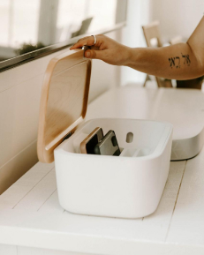

Spend quality
time together
We only get so much time with our kids--18 years goes
by quickly. Aro helps both parents and kids put down
their phones when it’s family time so you don’t look
back wishing you spent more time with your family and
less time on your phone.
by quickly. Aro helps both parents and kids put down
their phones when it’s family time so you don’t look
back wishing you spent more time with your family and
less time on your phone.
75%
of the time we spend with our kids in our lifetime will be
spent by age 12.
spent by age 12.


Teach your kids
healthy habits
Giving your kids a smartphone is a stressful decision.
Aro helps them develop healthy relationships with their
phones, allows you to model good habits, and gives you
peace of mind knowing they have the tools to be safe
and successful.
Aro helps them develop healthy relationships with their
phones, allows you to model good habits, and gives you
peace of mind knowing they have the tools to be safe
and successful.
83%
of parents believe it's important to have time as a
family without screens present.
family without screens present.
Reconnect with
your partner
We’ve all been there. It’s the end of the day, the kids are
finally asleep, and what happens? We sit down on the
couch and pick up our phones rather than connect with
the person right next to us. Putting your phone in Aro
shows your partner you are truly present with them.
finally asleep, and what happens? We sit down on the
couch and pick up our phones rather than connect with
the person right next to us. Putting your phone in Aro
shows your partner you are truly present with them.
79%
of married couples admit technology distracts them
from connecting with each other.
from connecting with each other.

Take some well-
deserved "me time"
Sometimes we need to quiet the outside voices a little.
Aro is your reminder that it’s OK to take some time for
yourself. That could be reading a book, reflecting on the
day, or even just getting a good night's sleep. You
deserve it.
Aro is your reminder that it’s OK to take some time for
yourself. That could be reading a book, reflecting on the
day, or even just getting a good night's sleep. You
deserve it.
91%
of adults keep their phones within an arm’s reach
all day.
all day.

See Aro in Action
Aro helps families put down their phones to connect, relax, and recharge.
The Aro Experience
Aro is so much more than an app and box for you
phone. It’s about what happens once you put down your
phone. Aro lets parents and kids connect by creating an
environment where phones aren't a distraction.
phone. It’s about what happens once you put down your
phone. Aro lets parents and kids connect by creating an
environment where phones aren't a distraction.
The Aro App
The Aro app gamifies the experience of being off your
phone. The app automatically connects to the Aro Home
device, measures the time you spend away from your
phone, reminds you to take breaks from your phone,
shows you data to improve your phone habits, and even
lets you connect and compete with others.
phone. The app automatically connects to the Aro Home
device, measures the time you spend away from your
phone, reminds you to take breaks from your phone,
shows you data to improve your phone habits, and even
lets you connect and compete with others.
The Aro Home Device
It’s beautiful, designed to be seen, and packed full of
technology. The Aro Home device automatically
connects to your phone when it’s placed inside and starts
measuring the time you spend away from your phone. Oh
yeah. It charges five phones at once too.
technology. The Aro Home device automatically
connects to your phone when it’s placed inside and starts
measuring the time you spend away from your phone. Oh
yeah. It charges five phones at once too.
“I don’t want my kids constantly seeing
me with my head down to be normal.
Aro gives us an invitation to put our
phones away and allows us to be more
present with each other.”
me with my head down to be normal.
Aro gives us an invitation to put our
phones away and allows us to be more
present with each other.”
Shelly McIntosh, Mom of 2
“Aro holds us accountable for the
time that we spend every day. Instead
of looking down at our phones, we’re
looking into our kids’ eyes, we’re
playing with them, and we’re shaping
our family in a more loving and
powerful way.”
time that we spend every day. Instead
of looking down at our phones, we’re
looking into our kids’ eyes, we’re
playing with them, and we’re shaping
our family in a more loving and
powerful way.”
“We’ve always had our kids keep their
devices outside in the living room
before they go to bed, but now our
daughter loves putting her phone in
Aro at night so she gets credit for her
time away.”
devices outside in the living room
before they go to bed, but now our
daughter loves putting her phone in
Aro at night so she gets credit for her
time away.”
Why Aro
A positive and practical approach to putting down our phones to be more present in the moments
that
matter

Creates space from
your phone
your phone
Unlike other solutions designed to
reduce screen time, the Aro
platform combines an app and a
physical device to create distance
between you and your phone so
you can have quality time without
the distraction of your phone.
reduce screen time, the Aro
platform combines an app and a
physical device to create distance
between you and your phone so
you can have quality time without
the distraction of your phone.
Gives you credit for
intentional time
intentional time
We live in a gamified world -
badges, streaks, achievements,
and filling in that daily ring. Aro
gives you credit for the time you
spend engaged in real life because
the reward builds the habit of
putting down your phone.
badges, streaks, achievements,
and filling in that daily ring. Aro
gives you credit for the time you
spend engaged in real life because
the reward builds the habit of
putting down your phone.
Designed with
families in mind
families in mind
We’ve spent years researching,
designing, and developing a
solution to help both parents and
kids. From a beautiful device
Mom won’t hate on the kitchen
counter to the celebratory GIFs in
the app, Aro appeals to the whole
family.
designing, and developing a
solution to help both parents and
kids. From a beautiful device
Mom won’t hate on the kitchen
counter to the celebratory GIFs in
the app, Aro appeals to the whole
family.
Aspirational,
yet practical
yet practical
No heavy handed approaches
here. Getting rid of your phone or
completely locking it away are not
practical solutions. We need our
phones...but maybe not at the
dinner table or during a
conversation. We designed Aro to
fit in your everyday rhythms.
here. Getting rid of your phone or
completely locking it away are not
practical solutions. We need our
phones...but maybe not at the
dinner table or during a
conversation. We designed Aro to
fit in your everyday rhythms.
89% of interactions
with our
smartphones are
self-initiated.
Source: Dr. Maxi Heitmayer